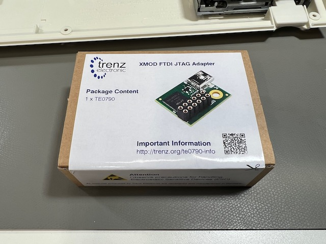
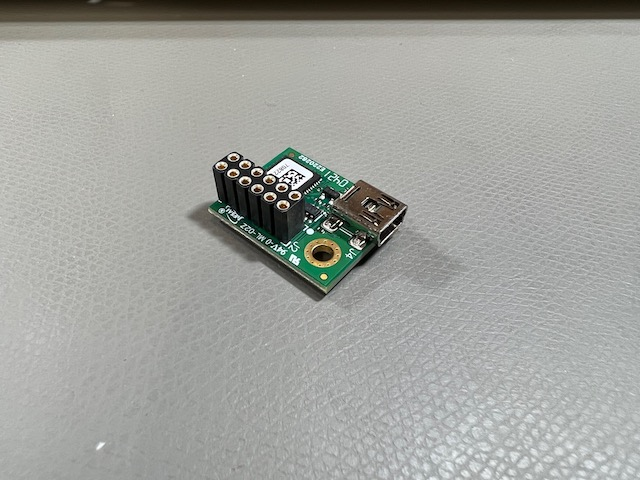
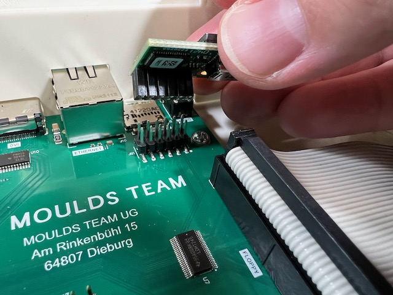
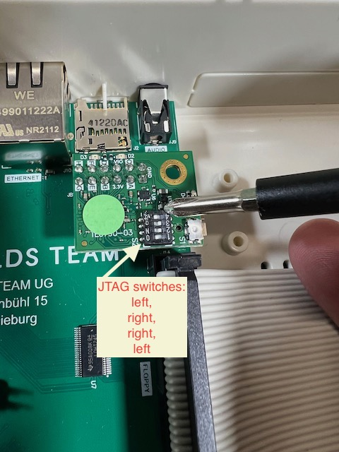

Using the JTAG connection¶
The MEGA65 main board has a 12-pin JTAG connection, a standard for connecting test equipment to devices. It is not intended for regular users of a device—but we MEGA65 owners are not regular users, are we?
With a JTAG USB adapter and software available on Filehost, you can connect your PC directly to the main board to:
Transfer files directly from your PC to MEGA65 without removing the SD card
Perform remote debugging on programs and even the built-in MEGA65 utilities
Upload cores for testing
The MEGA65 does not have a user-accessible port for the JTAG connection. You will have to acquire a JTAG USB adapter and a mini-USB cable, install it, and run the cable out the back of the MEGA65 case.
Tip
For another version of these instructions with more photos, see JTAG adapter, how to plug and DIP switch settings.
Acquiring a JTAG adapter¶
The XMOD FTDI JTAG Adapter TE0790-03 (Trenz Electronic) is compatible with the MEGA65. You might also be able to order the TE0790-03 from DigiKey. As of this writing, this item is difficult to get to supply chain issues.
 
Installing the JTAG adapter¶
You will have to open the MEGA65 case to connect the adapter to the 12-pin JTAG connector on the main board, in the back right corner. (See Opening the MEGA65 case for an annotated photo of the main board.) The adapter connects with the mini-USB connector facing to the right.

Use a pin to set the DIP switches on the connector to left, right, right, left. This configures the adapter to draw power from the USB connection instead of the MEGA65.

Connect a mini-USB cable to the JTAG connector, and run the cable out the back of the MEGA65 case. You can feed it out the cartridge port, or punch out one of the unused ports in the back case. Connect the other end to your PC.
Getting the software tools¶
On your PC, download the M65Connect app for Windows, Mac, or Linux, available from the Filehost. You can also use the m65 and m65_ftp command line tools, available from the mega65-tools Github repository. If you’re interested in the debugging feature, download the M65 Debugger app from Filehost.
See the M65Connect README and the m65dbg README for more information on how to use these tools.